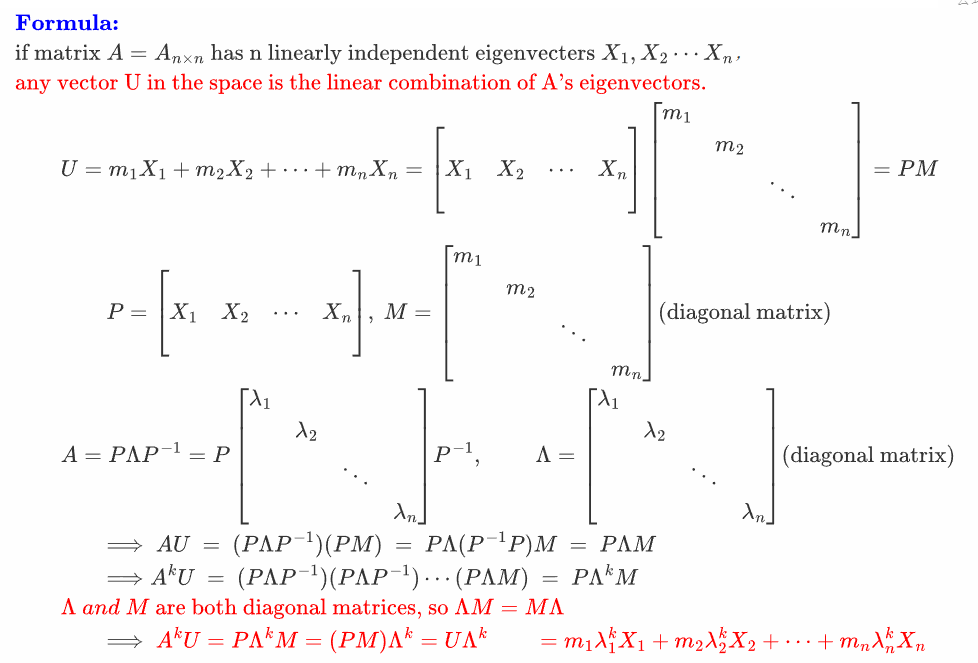
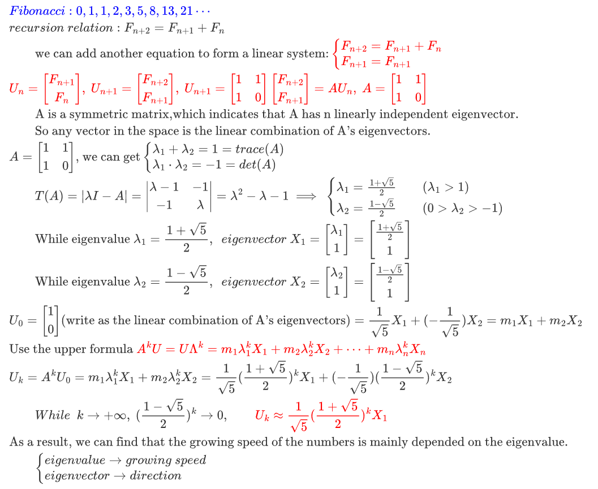

引言
自小学第一次做Fibonacci找规律，就感受到森森恶意……高中第一次看见通项公式，也看不太懂。后来发现，二阶矩阵的迭代就可以表示。
通项公式：
$$
a_n=\frac{1}{\sqrt{5}}
\left[
\left(
\frac{1+\sqrt{5}}{2}
\right)^n -
\left(
\frac{1-\sqrt{5}}{2}
\right)^n
\right]
$$
当然，更常用的方法应该是组合里的母函数法，但我仍旧觉得矩阵迭代是一种更优美的，合乎直觉的解决方案。本来这个文档只发布了草稿，但最近看到TIT上一篇做Polar码分析的论文Finite-Length Scaling for Polar Codes，作者在Part3 Heuristic Derivation for the BEC中的数值估计完全沿用了矩阵迭代的思路，结论很漂亮，于是把推导补充完整后发布了post。
直觉地考虑，如果一个东西可以表示为矩阵迭代，就可以用矩阵的特征根对原迭代行为进行分析。如果矩阵：
- 最大根范数>1，那么无穷次迭代后体现出趋于无穷的不稳定行为；
- 最大根范数=1，则构成一个稳定系统，无穷次迭代后仅由范数=1的根决定其行为；
- 最大根范数<1，则无穷次迭代后收敛到0，不产生任何行为。
以信道编码为例，我们通常考虑的编码定理都是在码长n趋于无穷时的渐近结论，这对应着无穷次迭代；如果想要分析非渐近行为，那么可以对应分析矩阵范数<1的那些根。这是一种很有意思的数值估计方法。
至于Fibonacci，原理还是很简单的：通项公式记为矩阵A，将前两项记为列向量$v_0$，则每两项就可以看为前两项的，关于A的一个线性变换。把$v_0$拆成A特征向量的组合，不停乘以A就好了。很巧的是，Fibonacci的通项公式写成矩阵模式，刚好是个实对称矩阵，显然有两个线性无关的特征向量，那么随便给两个初项写成的列向量一定能被它俩表示，就一定有解。这个例子我印象里是在Gilbert Strang一本叫应用线性代数的书里读到的。
总而言之就是，太漂亮了！
小公式推导

- 就是迭代。利用矩阵的相似对角化，和$AX=kX$大批量化简迭代中的$P^{-1}P$部分，剩下的对角阵就会变得相当好看。
解法

差分迭代？
btw，上次解了一下银行的某些利率问题——在观察银行的利率周期从一年逐渐向一个月，一天……递减时，利率的值实际上是增加了的——事实上是趋向于e。这个从离散利率到连续利率的过渡可以很容易从e的定义式里找出。e的指数函数似乎总是比较特殊的，例如它求导形式不变，只改变系数的这一特点，很容易让人联想到矩阵最根本的特征值与特征向量——事实上他们确实很相关。在将单阵对角化以后，一个只与特征值和特征向量（或许可以写为标准正交阵的形式）相关的迭代方程就出现了。
公式代码
博客上数学公式的显示寄了，代码贴在下面……
\begin{align}
&\color{blue}\textbf{Formula:}\\
&\text{if matrix }A=A_{n\times n}\text{ has n linearly independent eigenvecters }X_1,X_2\cdots X_n，\\
&\color{red}{\text{any vector U in the space is the linear combination of A's eigenvectors.}} \\
&\qquad U=m_1X_1 +m_2X_2 +\cdots+m_nX_n =
\left[\begin{matrix}
\ &\ &\ \\
X_1&X_2&\cdots&X_n\\
\ &\ &\ \\
\end{matrix}\right]
\left[\begin{matrix}
m_1&&&\\
&m_2&&\\
&&\ddots&\\
&&&m_n
\end{matrix}\right]=PM\\
&\qquad \qquad P=\left[\begin{matrix}
\ &\ &\ \\
X_1&X_2&\cdots&X_n\\
\ &\ &\ \\
\end{matrix}\right],\
M = \left[\begin{matrix}
m_1&&&\\
&m_2&&\\
&&\ddots&\\
&&&m_n
\end{matrix}\right] \text{(diagonal matrix) }\\
&\qquad A=P\Lambda P^{-1}
=P\left[\begin{matrix}
\lambda_1&&&\\
&\lambda_2&&\\
&&\ddots&\\
&&&\lambda_n
\end{matrix}\right] P^{-1},\qquad\
\Lambda = \left[\begin{matrix}
\lambda_1&&&\\
&\lambda_2&&\\
&&\ddots&\\
&&&\lambda_n
\end{matrix}\right] \text{(diagonal matrix) }\\
&\qquad \qquad\Longrightarrow\
AU\ =\ (P\Lambda P^{-1})(PM)
\ =\ P\Lambda (P^{-1}P)M
\ =\ P\Lambda M\\
&\qquad \qquad \Longrightarrow
A^kU \ =\ (P\Lambda P^{-1})(P\Lambda P^{-1})\cdots(P\Lambda M)
\ =\ P\Lambda^{k}M\\
&\qquad
\color{red}{\Lambda\ and\ M\text{ are both diagonal matrices, so }}
\Lambda M=M\Lambda\\
&\qquad \qquad\Longrightarrow\
\color{red}A^kU =P\Lambda^{k}M=(PM)\Lambda^{k}=U\Lambda^{k}
\qquad=m_1\lambda_1^{k}X_1+m_2\lambda_2^{k}X_2+\cdots+m_n\lambda_n^{k}X_n\\
&\\
\end{align}
\begin{align}
&\color{blue}Fibonacci:0,1,1,2,3,5,8,13,21\cdots\\
&recursion \ relation:F_{n+2}=F_{n+1}+F_{n}\\
&\qquad \text{we can add another equation to form a linear system:}
\color{red}
\begin{cases}
F_{n+2}=F_{n+1}+F_{n}\\
F_{n+1}=F_{n+1}
\end{cases}\\
&\color{red}
U_n=\left[\begin{array}\\F_{n+1}\\F_{n}\end{array}\right],\
U_{n+1}=\left[\begin{array}\\F_{n+2}\\F_{n+1}\end{array}\right],\
U_{n+1} = \left[\begin{matrix}1&1\\1&0\end{matrix}\right]
\left[\begin{array}\\F_{n+2}\\F_{n+1}\end{array}\right]
=AU_n,\
A=\left[\begin{matrix}1&1\\1&0\end{matrix}\right]\\
&\qquad \text{A is a symmetric matrix,which indicates that A has n linearly independent eigenvector.}\\
&\qquad \text{So any vector in the space is the linear combination of A's eigenvectors.}\\
&A=\left[\begin{matrix}1&1\\1&0\end{matrix}\right]
\text{, we can get}
\begin{cases}
\lambda_1+\lambda_2=1=trace(A)\\
\lambda_1\cdot\lambda_2=-1=det(A)
\end{cases}\\
&\qquad T(A)=|\lambda I-A|=
\left|\begin{matrix}
\lambda-1&-1\\
-1&\lambda\\
\end{matrix}\right|
=\lambda^2-\lambda-1
\ \Longrightarrow\
\begin{cases}
\lambda_1=\frac{1+\sqrt{5}}{2}\qquad(\lambda_1>1) \\
\lambda_2=\frac{1-\sqrt{5}}{2}\qquad(0>\lambda_2>-1)
\end{cases}\\
&\qquad \text{While eigenvalue } \lambda_1 = \frac{1+\sqrt{5}}{2},\ \
eigenvector\ X_1 =
\left[\begin{array}\\\lambda_1\\1\end{array}\right]
=\left[\begin{array}\\\frac{1+\sqrt{5}}{2}\\1\end{array}\right]\\
&\qquad \text{While eigenvalue } \lambda_2 = \frac{1-\sqrt{5}}{2},\ \
eigenvector\ X_2 =
\left[\begin{array}\\\lambda_2\\1\end{array}\right]
=\left[\begin{array}\\\frac{1-\sqrt{5}}{2}\\1\end{array}\right]\\
&U_0=\left[\begin{array}\\1\\0\end{array}\right]
\text{(write as the linear combination of A's eigenvectors)}=
\frac{1}{\sqrt{5}} X_1 +(-\frac{1}{\sqrt{5}}) X_2
=m_1X_1+m_2X_2\\
&\text{Use the upper formula }
\color{red}A^kU=U\Lambda^{k}=m_1\lambda_1^{k}X_1+m_2\lambda_2^{k}X_2+\cdots+m_n\lambda_n^{k}X_n
\\
&U_k=A^kU_0=m_1\lambda_1^{k}X_1+m_2\lambda_2^{k}X_2=
\frac{1}{\sqrt{5}} (\frac{1+\sqrt{5}}{2})^k X_1
+(-\frac{1}{\sqrt{5}}) (\frac{1-\sqrt{5}}{2})^k X_2
\\
&\qquad While\ \ k\rightarrow+\infty,\ (\frac{1-\sqrt{5}}{2})^k\rightarrow 0,
\color{red} \qquad U_k\approx\frac{1}{\sqrt{5}} (\frac{1+\sqrt{5}}{2})^k X_1\\
&\text{As a result, we can find that the growing speed of the numbers is mainly depended on the eigenvalue.}\\
&\qquad \begin{cases}
eigenvalue\rightarrow growing\ speed \\
eigenvector\rightarrow direction
\end{cases}\\
\end{align}